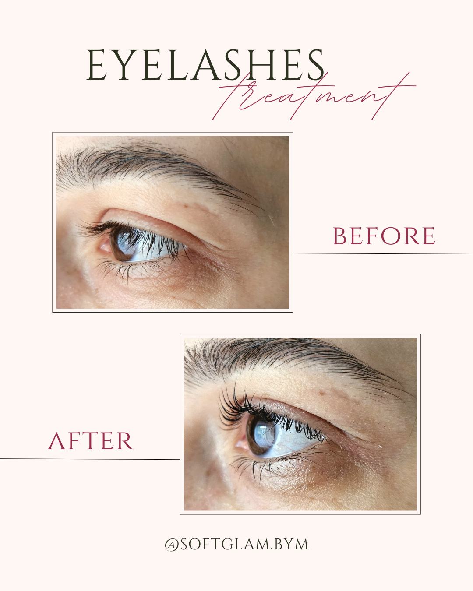

Pensat și stilizare gene
Tehnica de LG oferă genelor un aspect mai curbat, definit și sănătos pentru o perioadă îndelungată. Privirea devine mai deschisă și expresivă, fără a fi nevoie de mascara zilnic. Este soluția ideală pentru un efect natural, dar spectaculos.
- Gene vizibil alungite și curbate
- Rezultat de lungă durată (6-8 săptămâni)
- Produse profesionale sigure și delicate
🌟 "Genele mele arată fabulos după laminare, par mai lungi și mai dese, iar ochii mei par mereu machiați." - Ioana, clientă